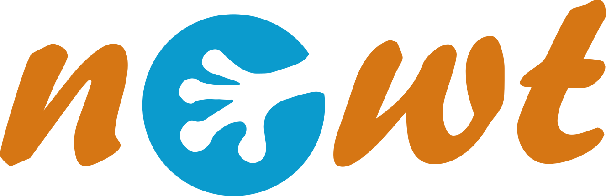

Welcome to Newt Pathway Viewer & Editor
Newt is a free, web based, open source viewer and editor for pathways in Systems Biological Graphical Notation (SBGN), Systems Biology Markup Language (SBML), and Simple Interaction Format (SIF). It was written with a series of libraries and extensions based on Cytoscape.js with utmost customization in mind.
| Launch |  |
|---|
What distinguishes Newt from other viewers and editors for biological maps can be summarized as:
- Rich and refined, yet easy-to-use web based UI
- Convenient construction and annotation of pathways from scratch as well as viewing and editing existing maps
- Full support for compound structures (including automatic layout) to properly represent compartments, molecular complexes, and sub-maps
- Semantic validation and guided fix for SBGN PD maps
- State-of-the-art complexity management capabilities through hide-show or highlight parts of a map and collapse-expand compound structures
- Advanced diagramming through interactive move, resize, and styling of map objects including color schemes, re-routing and re-connection of interactions, and grid & alignment guideline support
- Support for experiment data overlay on maps
- Facilities for querying, viewing, and editing pathways in Pathway Commons, Reactome, and WikiPathways,
- Links from prominent pathway database pages to Newt, for enabling editing of these pathways (Reactome, BioModels, and WikiPathways),
- Conversion to and from CellDesigner , SBML, and GPML file formats
- Launching with a remote model specified as a URL (SBGN, SBML, or GPML), or as a URI (example)
- Support for SBGN bricks
Some Newt version 4 features are highlighted in here.
Citation
Please cite the following when you use Newt:
H. Balci, M.C. Siper, N. Saleh, I. Safarli, L. Roy, M. Kilicarslan, R. Ozaydin, A. Mazein, C. Auffray, O. Babur, E. Demir and U. Dogrusoz, Newt: a comprehensive web-based tool for viewing, constructing, and analyzing biological maps, Bioinformatics, 37(10), pp.1475-1477, 2021.
M. Sari, I. Bahceci, U. Dogrusoz, S.O. Sumer, B.A. Aksoy, O. Babur, E. Demir, SBGNViz: a tool for visualization and complexity management of SBGN process description maps, PLoS ONE, 10(6), e0128985, 2015.
Source code
Newt source code can be found on this Github repository.
License
Newt is distributed under GNU Lesser General Public License. See here for third-party libraries used.
Browser compatibility
Newt is expected to work on most major browsers with recent releases without any prior installation or set up.
About
Newt is being developed and maintained by i-Vis Research Lab. The Demir Lab at OHSU and EISBM contributed to the project in the past.